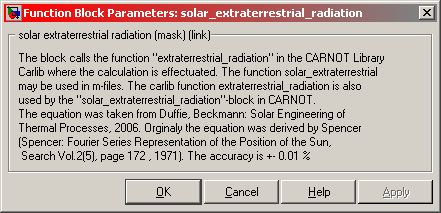

Solar_Extraterrestrial_Radiation
Path: CARNOT/Basic/Weather_and_Sun
Purpose:
Calculates the solar extraterrestrial radiation on a normal plane in W/m2.
Description:
The block calls the function "extraterrestrial_radiation" in the CARNOT
Carlib Library where the calculation is effectuated. The equation was taken
from Duffie, Beckmann: Solar Engineering of Thermal Processes, 2006. Originally
the equation was derived by Spencer (1971). The accuracy is +- 0.01 %.
The function is also available as Matlab-function
solarExtraterrestrialRadiation(time)
and may be used in m-files.
Input:
| time | : | time of the year in s January 1st 00:00:00 = 0 s, December 31st 24:00:00 = 365*24*3600 s |
Output:
| Iextra | : | solar extraterrestrial radiation on a normal plane in W/m2 |
Parameters and Dialog Box:

Literature:
Duffie, J., Beckman, W.: Solar Engineering of thermal processes,
John Wiley & Sons, Inc. 2020
Spencer: Fourier Series Representation of the Position of the Sun,
Search Vol.2(5), page 172, 1971
Characteristics:
| Direct Feedthrough | : | Yes |
| Sample Time | : | Inherited from driving block |
| Vectorized | : | No |